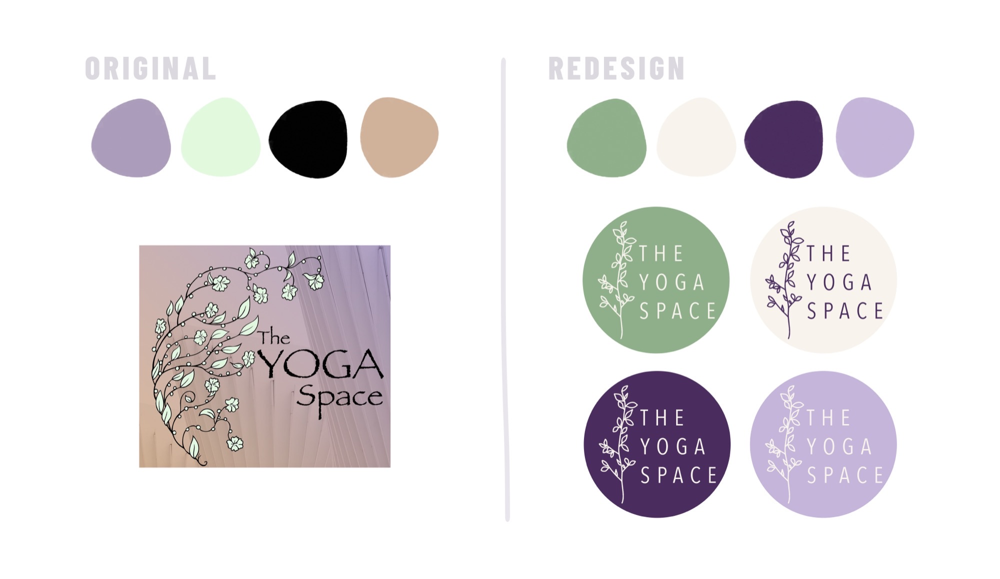
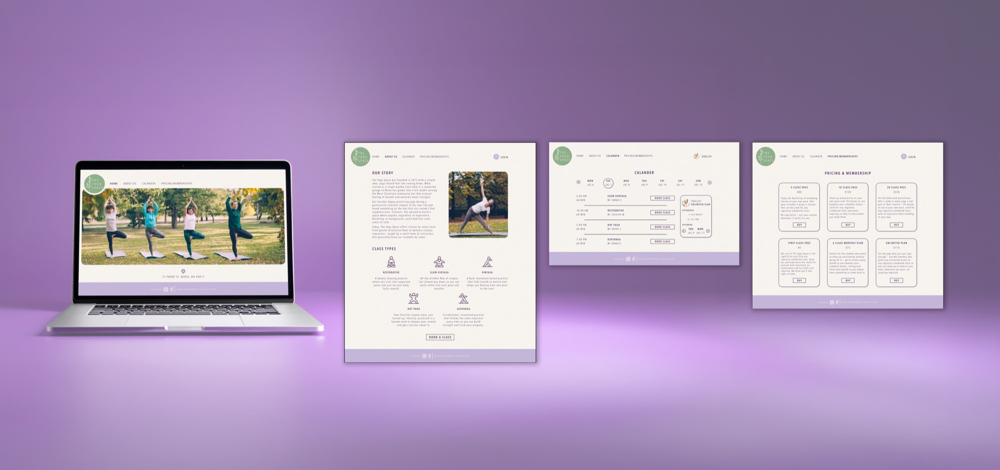
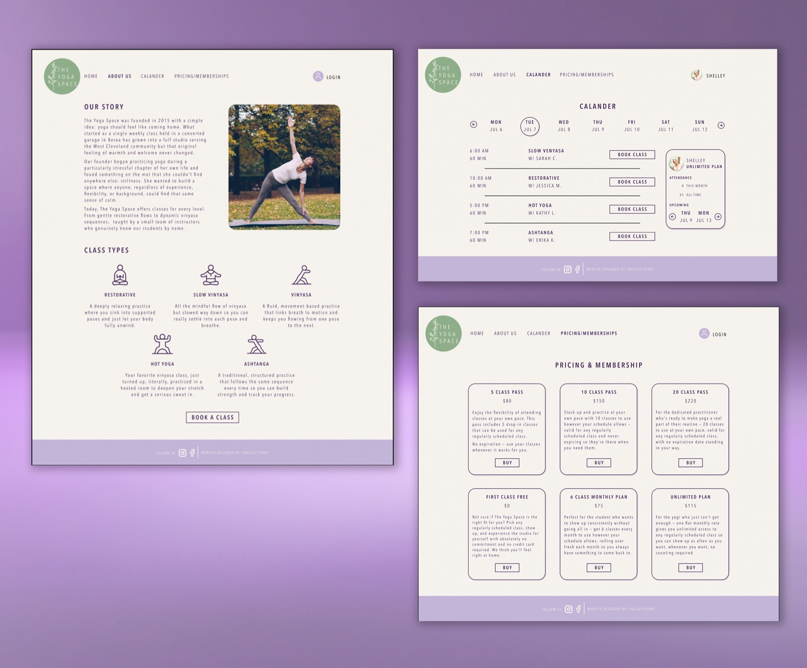

The Yoga Space
Brand Identity · Web Design
The Yoga Space was a local yoga studio in Berea, Ohio that I attended personally. As a student the booking experience always frustrated me, finding a class, reserving a spot, and tracking your remaining class pack balance was far more complicated than it needed to be. I redesigned the full booking experience as a desktop web app, simplifying the class schedule, streamlining the booking flow, and making class pack visibility a core part of the design. For the branding I kept the soul of the original identity intact, pulling similar colors but refining them into a calmer, more spa-like palette, and carrying the botanical branch element into the new logo as a nod to where it all started.

The Problem
The Yoga Space had an online booking system but it wasn't doing its job. The flow was unintuitive and there was no way to see how many classes were left in your pack. As a student who attended personally, I felt that frustration firsthand.
My Role
This one was all me. I designed the logo and branding in Photoshop and built out the full web design in Figma. A passion project born from a real frustration with a place I genuinely loved.
The Process
Since the studio has since closed I leaned on my own experience as a student, researched competitor platforms like Mindbody and ClassPass, and dug into App Store reviews to find common pain points. From there I mapped out a simpler flow and designed it desktop first.
The Solution
A full desktop booking experience where students can browse the schedule, filter by class type and instructor, see spots remaining, and track their class pack balance at checkout. The logo and branding got a refresh too, keeping the botanical elements and color family but refining everything into a calmer, more spa-like identity.
The Result
A booking experience that actually makes you want to book. Clear, calm, and designed around the information students actually need.

